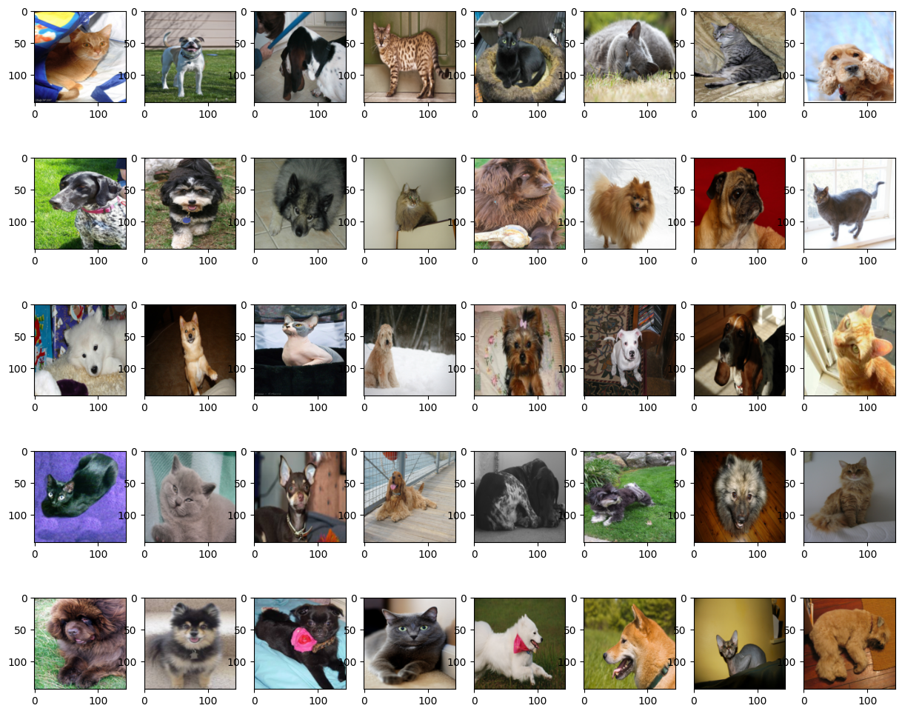
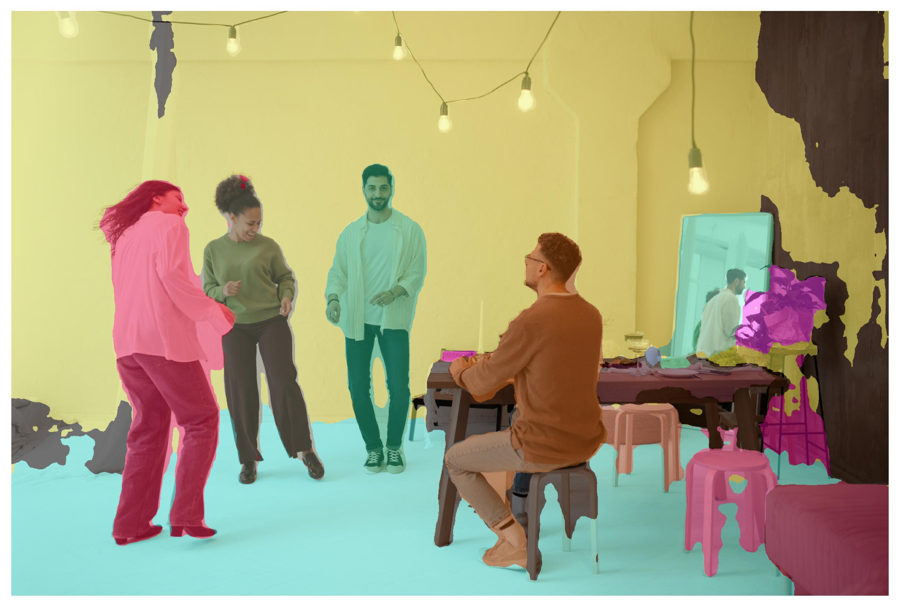
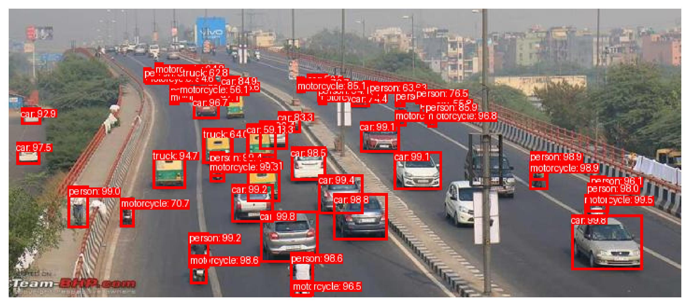
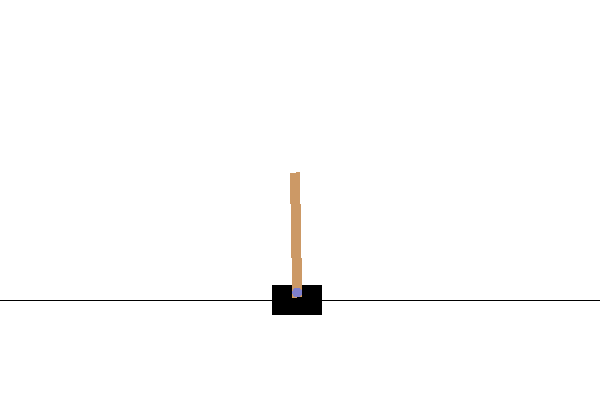
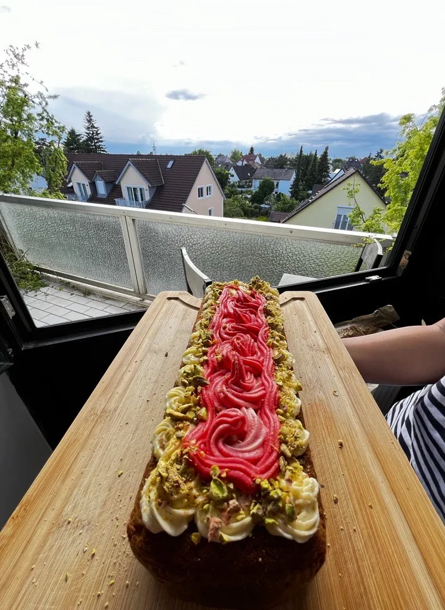
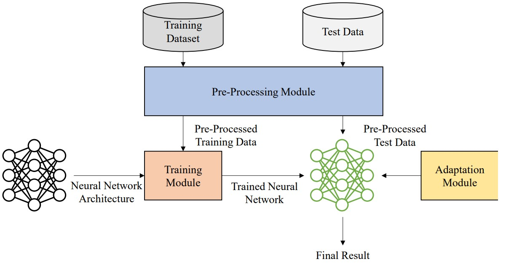
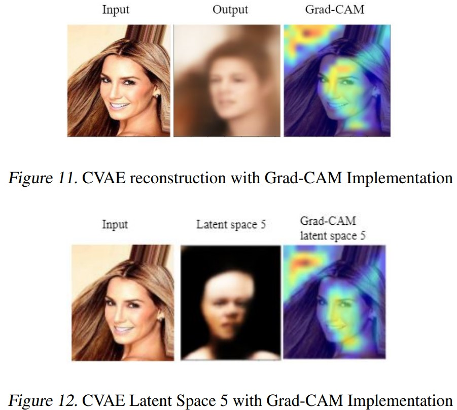
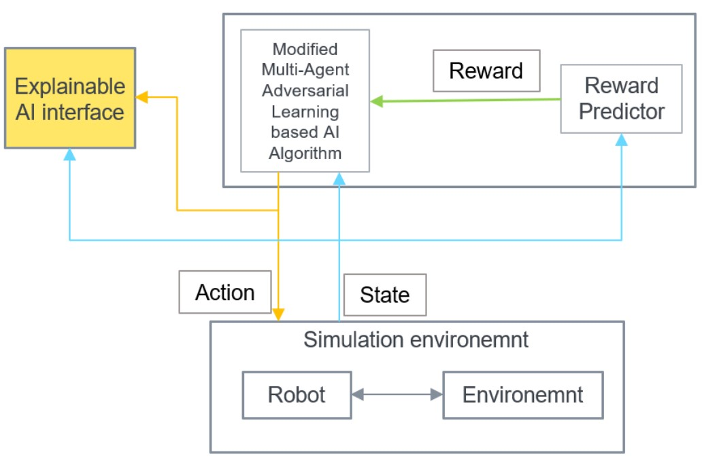

Praveen Kumar
"Passionate about Deep Learning and its vast applications. Continuously learning and interested in global affairs, politics, and economics."
Repositories

Vision Transformer (ViT)
Leveraging Self-Attention Mechanisms for Precise and Efficient Visual Categorization
h2>

Detection Transformers (DETR)
Classify and segment any image using Detection Transformers
h2>

YOLO Reimagined
Advanced Object Detection and Recognition for Enhanced Visual Perception.
Human-Preference and RL trained Safe path planning for TurtleBot
Enhancing TurtleBot Navigation: Integrating Reinforcement Learning with Human Preferences for Safe and Human-like Control.
h2>

Reinforcement Learning on Cartpole
DDQN Reinforcement Learning on Cartpole in OpenAI Env.
h2>
Technical Blogs (and my photography skills)

Attention is All You Need

Understanding the Bias-Variance...

Types of Loss functions and their use cases and code
A short introduction to StyleGAN
ByteTrack …Because deep learning is not the ‘only’ solution
Generative Facial Prior GAN(GFP-GAN) Explained
Papers and Publications

An Architecture for Adaptive Machine Learning Models Using Adversarial and Transfer Learning

Interpretation of Activation Maps in Generative Models

Risk assessment of the result of AI algorithms at runtime